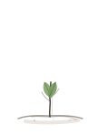
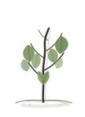
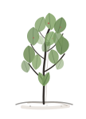

首页小树动画模拟
这是近似微信小程序 WebView 的模拟页：使用当前首页的树容器尺寸、阶段 class、裁切比例和 keyframes。真实 DevTools CLI 未安装时，用它先观察动画露出是否自然。
stage-0 · 土壤



这是近似微信小程序 WebView 的模拟页：使用当前首页的树容器尺寸、阶段 class、裁切比例和 keyframes。真实 DevTools CLI 未安装时，用它先观察动画露出是否自然。


